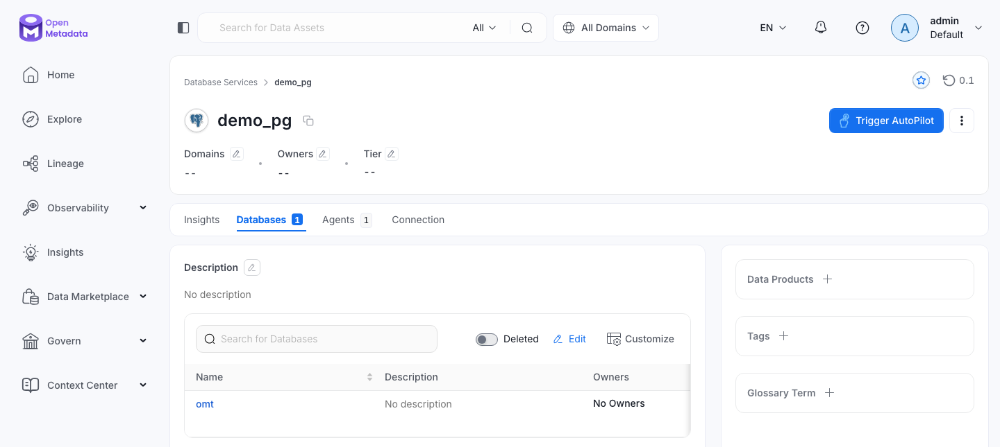
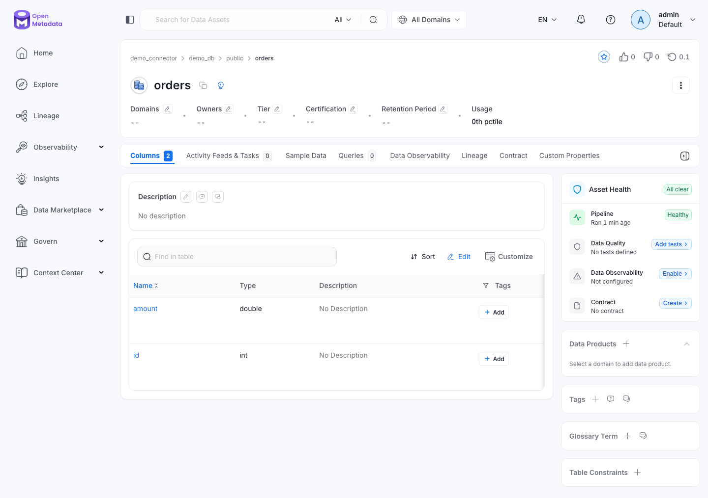

A data catalogue lists the databases, tables and columns of an organisation, so people can search them and see who owns each one. The metadata profile runs OpenMetadata, a data catalogue: the server with its UI and REST API, Elasticsearch for search, and an ingestion container. The ingestion container is an Airflow that runs the ingestion pipelines the server deploys, which the OpenMetadata UI calls agents (API path ingestionPipelines). Its own tables are in the omt database on PostgreSQL. The end-to-end tests run the commands below on every release.
This guide builds on Getting Started. It uses the PostgreSQL that the profile starts as the database to catalogue. The profile also starts storage, SeaweedFS, whose openmetadata bucket holds custom connectors.
Start the profile:
| docs/snippets/openmetadata/commands.sh:up |
|---|
| |
Log in as admin@odctl.io with the password admin, or as user@odctl.io with password. A database from an earlier release keeps its users admin@open-data.local and user@open-data.local, both with the password admin: the odctl.io domain and the password password apply to a new database only. A wrong domain fails with an invalid username or password error. The ingestion Airflow takes user and password.
Get a Token
The login API takes the password base64-encoded and returns a JWT, a signed token that later requests send in the Authorization header. This sets TOKEN and AUTH for the next steps, and prints nothing:
| docs/snippets/openmetadata/commands.sh:login |
|---|
| TOKEN=$(curl -s -H 'Content-Type: application/json' \
-d "{\"email\":\"admin@odctl.io\",\"password\":\"$(printf admin | base64)\"}" \
http://127.0.0.1:8585/api/v1/users/login \
| python3 -c 'import json,sys; print(json.load(sys.stdin)["accessToken"])')
AUTH="Authorization: Bearer $TOKEN"
|
On a database from an earlier release, use admin@open-data.local instead.
Register PostgreSQL as a Database Service
PostgreSQL is already running, so it serves as the source. The server reaches it by its container name. This sets SVC to the id of the new service:
| docs/snippets/openmetadata/commands.sh:service |
|---|
| SVC=$(curl -s -X PUT -H "$AUTH" -H 'Content-Type: application/json' \
-d '{"name":"demo_pg","serviceType":"Postgres","connection":{"config":{"type":"Postgres","scheme":"postgresql+psycopg2","username":"user","authType":{"password":"password"},"hostPort":"postgres:5432","database":"omt"}}}' \
http://127.0.0.1:8585/api/v1/services/databaseServices \
| python3 -c 'import json,sys; print(json.load(sys.stdin)["id"])')
|
OpenMetadata has an app called AutoPilot. When a service is added in the UI, AutoPilot creates and runs default agents for it. A service created through the API never starts AutoPilot. odctl turns AutoPilot off, so a service added in the UI also gets only the agents you create. The METADATA_AUTOPILOT key in .odctl/.env sets it, false by default, and the openmetadata-init service applies it to AutoPilot's active value each time the profile starts. This shows the current value:
| docs/snippets/openmetadata/commands.sh:autopilot |
|---|
| curl -s -H "$AUTH" \
"http://127.0.0.1:8585/api/v1/apps/name/AutoPilotApplication?fields=appConfiguration" \
| python3 -c 'import json,sys; print(json.load(sys.stdin)["appConfiguration"]["active"])'
|
It prints False. To turn AutoPilot on, set METADATA_AUTOPILOT="true" in .odctl/.env and run odctl recreate metadata. The command then prints True.
openmetadata-init logs in as admin@odctl.io with admin, or as admin@open-data.local on a database from an earlier release; when both fail, docker logs openmetadata-init ends with AutoPilot could not be set.
Create an agent, deploy it as a DAG into the ingestion Airflow, and trigger it:
| docs/snippets/openmetadata/commands.sh:pipeline |
|---|
| PIPE=$(curl -s -X POST -H "$AUTH" -H 'Content-Type: application/json' \
-d "{\"name\":\"demo_pg_metadata\",\"pipelineType\":\"metadata\",\"service\":{\"id\":\"$SVC\",\"type\":\"databaseService\"},\"sourceConfig\":{\"config\":{\"type\":\"DatabaseMetadata\"}},\"airflowConfig\":{\"startDate\":\"2026-01-01T00:00:00.000Z\"}}" \
http://127.0.0.1:8585/api/v1/services/ingestionPipelines \
| python3 -c 'import json,sys; print(json.load(sys.stdin)["id"])')
curl -s -X POST -H "$AUTH" http://127.0.0.1:8585/api/v1/services/ingestionPipelines/deploy/$PIPE
curl -s -X POST -H "$AUTH" http://127.0.0.1:8585/api/v1/services/ingestionPipelines/trigger/$PIPE
|
The deploy answers that the agent's workflow has been created. It works once odctl up metadata has returned, because the profile waits until the ingestion Airflow answers. Airflow has to parse the new DAG file before the trigger works, so repeat the trigger every few seconds until it answers that the workflow has been triggered. Then read the run's state:
| docs/snippets/openmetadata/commands.sh:status |
|---|
| curl -s -H "$AUTH" \
"http://127.0.0.1:8585/api/v1/services/ingestionPipelines/name/demo_pg.demo_pg_metadata?fields=pipelineStatuses"
|
The reply is the agent as JSON. The pipelineState of the first entry of pipelineStatuses reaches success when the tables are catalogued. They then appear in the UI under the demo_pg service.

Search the Catalogue
Rebuild the search index, then query it:
| docs/snippets/openmetadata/commands.sh:search |
|---|
| curl -s -X POST -H "$AUTH" http://127.0.0.1:8585/api/v1/apps/trigger/SearchIndexingApplication
curl -s -H "$AUTH" "http://127.0.0.1:8585/api/v1/search/query?q=*&index=table_search_index&size=1"
|
The search reply is JSON, and hits.total.value counts the searchable tables. The index fills over a few minutes after the rebuild, and then holds more than 100 tables: OpenMetadata's own tables in the omt database.
Add a Custom Connector
A custom connector is a Python class that reports databases, schemas and tables from a system OpenMetadata has no connector for. The ingestion container copies every file under s3://openmetadata/connectors into /opt/airflow/connectors, which is on its PYTHONPATH, so an agent can import a module or a package from there. How It Works compares the three profiles that read code from a bucket. A connector module must not have the name of an installed package such as metadata or airflow, because the connectors folder comes before the installed packages on the Python path.
This connector reports one database, one schema and one table, written in the code. Save it as demo_connector.py:
| docs/snippets/openmetadata/connector/demo_connector.py |
|---|
| """A custom database connector that reports one database, one schema and one table."""
from typing import Iterable, Optional
from metadata.generated.schema.api.data.createDatabase import CreateDatabaseRequest
from metadata.generated.schema.api.data.createDatabaseSchema import (
CreateDatabaseSchemaRequest,
)
from metadata.generated.schema.api.data.createTable import CreateTableRequest
from metadata.generated.schema.entity.data.table import Column, DataType
from metadata.generated.schema.metadataIngestion.workflow import (
Source as WorkflowSource,
)
from metadata.ingestion.api.models import Either
from metadata.ingestion.api.steps import Source
from metadata.ingestion.ometa.ometa_api import OpenMetadata
class DemoSource(Source):
"""Reads no external system: the table it reports is written in the code."""
def __init__(self, config: WorkflowSource, metadata: OpenMetadata):
super().__init__()
self.config = config
self.metadata = metadata
self.service = config.serviceName
@classmethod
def create(
cls,
config_dict: dict,
metadata: OpenMetadata,
pipeline_name: Optional[str] = None,
) -> "DemoSource":
return cls(WorkflowSource.model_validate(config_dict), metadata)
def prepare(self) -> None:
pass
def test_connection(self) -> None:
pass
def _iter(self, *_, **__) -> Iterable[Either]:
yield Either(right=CreateDatabaseRequest(name="demo_db", service=self.service))
yield Either(
right=CreateDatabaseSchemaRequest(
name="public", database=f"{self.service}.demo_db"
)
)
yield Either(
right=CreateTableRequest(
name="orders",
databaseSchema=f"{self.service}.demo_db.public",
columns=[
Column(name="id", dataType=DataType.INT),
Column(name="amount", dataType=DataType.DOUBLE),
],
)
)
def close(self) -> None:
pass
|
Upload it from the folder that holds the file. The command runs boto3 inside the ingestion container, which has the S3 settings, and reaches SeaweedFS at http://seaweed:8333, its S3 address inside the odctl network. It prints nothing:
| docs/snippets/openmetadata/connector/commands.sh:upload |
|---|
| docker exec -i openmetadata-ingestion python -c '
import boto3, sys
boto3.client("s3", endpoint_url="http://seaweed:8333").put_object(
Bucket="openmetadata", Key="connectors/demo_connector.py", Body=sys.stdin.buffer.read())
' < demo_connector.py
|
The container checks S3 every 15 seconds and copies the file within about 15 seconds of the upload. The interval is set today by INTERVAL_SECONDS in .odctl/openmetadata/connector_sync.py, where an edit can change it. List the connectors folder until demo_connector.py is there:
| docs/snippets/openmetadata/connector/commands.sh:copied |
|---|
| docker exec openmetadata-ingestion ls /opt/airflow/connectors
|
Create the service and its agent through the API, as in the PostgreSQL steps above, with the same AUTH. The service is of type CustomDatabase, and sourcePythonClass names the module and the class. This sets SVC to the id of the new service:
| docs/snippets/openmetadata/connector/commands.sh:service |
|---|
| SVC=$(curl -s -X PUT -H "$AUTH" -H 'Content-Type: application/json' \
-d '{"name":"demo_connector","serviceType":"CustomDatabase","connection":{"config":{"type":"CustomDatabase","sourcePythonClass":"demo_connector.DemoSource"}}}' \
http://127.0.0.1:8585/api/v1/services/databaseServices \
| python3 -c 'import json,sys; print(json.load(sys.stdin)["id"])')
|
Create the agent, deploy it as a DAG into the ingestion Airflow, and trigger it. As in the PostgreSQL steps, repeat the trigger every few seconds until it answers that the workflow has been triggered:
| docs/snippets/openmetadata/connector/commands.sh:agent |
|---|
| PIPE=$(curl -s -X POST -H "$AUTH" -H 'Content-Type: application/json' \
-d "{\"name\":\"demo_connector_metadata\",\"pipelineType\":\"metadata\",\"service\":{\"id\":\"$SVC\",\"type\":\"databaseService\"},\"sourceConfig\":{\"config\":{\"type\":\"DatabaseMetadata\"}},\"airflowConfig\":{\"startDate\":\"2026-01-01T00:00:00.000Z\"}}" \
http://127.0.0.1:8585/api/v1/services/ingestionPipelines \
| python3 -c 'import json,sys; print(json.load(sys.stdin)["id"])')
curl -s -X POST -H "$AUTH" http://127.0.0.1:8585/api/v1/services/ingestionPipelines/deploy/$PIPE
curl -s -X POST -H "$AUTH" http://127.0.0.1:8585/api/v1/services/ingestionPipelines/trigger/$PIPE
|
Read the run's state until the pipelineState of the first entry of pipelineStatuses reaches success:
| docs/snippets/openmetadata/connector/commands.sh:status |
|---|
| curl -s -H "$AUTH" \
"http://127.0.0.1:8585/api/v1/services/ingestionPipelines/name/demo_connector.demo_connector_metadata?fields=pipelineStatuses"
|
The table is then in the catalogue:
| docs/snippets/openmetadata/connector/commands.sh:table |
|---|
| curl -s -H "$AUTH" \
"http://127.0.0.1:8585/api/v1/tables/name/demo_connector.demo_db.public.orders?fields=columns"
|
The reply is the table orders with its columns id and amount. The UI shows the same table under the service demo_connector, with its columns and the agent run that created it:

A change to the connector needs no restart. Rename the table in the file:
| docs/snippets/openmetadata/connector/commands.sh:change |
|---|
| sed -i.bak 's/name="orders"/name="orders_v2"/' demo_connector.py
|
Upload it again with the upload command above. The container has copied it when this prints 1:
| docs/snippets/openmetadata/connector/commands.sh:copied-change |
|---|
| docker exec openmetadata-ingestion grep -c orders_v2 /opt/airflow/connectors/demo_connector.py
|
Trigger the agent again:
| docs/snippets/openmetadata/connector/commands.sh:retrigger |
|---|
| curl -s -X POST -H "$AUTH" http://127.0.0.1:8585/api/v1/services/ingestionPipelines/trigger/$PIPE
|
A run that starts after the copy reports orders_v2. Read the run's state as above, then the changed table:
| docs/snippets/openmetadata/connector/commands.sh:changed-table |
|---|
| curl -s -H "$AUTH" \
"http://127.0.0.1:8585/api/v1/tables/name/demo_connector.demo_db.public.orders_v2"
|
From Another Container
Inside the odctl network, call the API at http://openmetadata-server:8585. The server also answers the Model Context Protocol at http://127.0.0.1:8585/mcp with the same token.
Remove the Example
This deletes the services with their agents and the tables they catalogued, and the uploaded connector. The container removes the file from /opt/airflow/connectors within about 15 seconds:
| docs/snippets/openmetadata/commands.sh:remove |
|---|
| for service in demo_pg demo_connector; do
curl -s -X DELETE -H "$AUTH" \
"http://127.0.0.1:8585/api/v1/services/databaseServices/name/$service?hardDelete=true&recursive=true"
done
docker exec openmetadata-ingestion python -c '
import boto3
boto3.client("s3", endpoint_url="http://seaweed:8333").delete_object(
Bucket="openmetadata", Key="connectors/demo_connector.py")
'
|
Runnable Example
Save this file as example.sh and run it with bash example.sh in the folder that holds your .odctl workspace and demo_connector.py. It runs every step above except changing the connector, waits where a step needs time, and removes both services and the uploaded connector at the end. It prints autopilot active: False, the state of each ingestion, custom table: orders, the number of searchable tables, and removed demo_pg and demo_connector:
| docs/snippets/openmetadata/example.sh |
|---|
| #!/usr/bin/env bash
# Starts metadata, shows AutoPilot's state, registers PostgreSQL as a database
# service and runs a metadata ingestion of the omt database. Then it uploads a
# custom connector, runs its agent, reads its table, counts the searchable
# tables and removes both services and the connector again. Run it in the folder
# that holds .odctl and demo_connector.py, the file of the Add a Custom
# Connector section.
set -euo pipefail
odctl up metadata
om=http://127.0.0.1:8585/api/v1
json() { python3 -c "import json, sys; print($1)"; }
TOKEN=$(curl -s -H 'Content-Type: application/json' \
-d "{\"email\":\"admin@odctl.io\",\"password\":\"$(printf admin | base64)\"}" \
"$om/users/login" | json 'json.load(sys.stdin)["accessToken"]')
AUTH="Authorization: Bearer $TOKEN"
echo "autopilot active: $(curl -s -H "$AUTH" "$om/apps/name/AutoPilotApplication?fields=appConfiguration" \
| json 'json.load(sys.stdin)["appConfiguration"]["active"]')"
# Registers a database service, creates its agent, deploys and triggers it, and
# waits for the run. Usage: ingest <service name> <service JSON>
ingest() {
local svc pipe state=""
svc=$(curl -s -X PUT -H "$AUTH" -H 'Content-Type: application/json' -d "$2" \
"$om/services/databaseServices" | json 'json.load(sys.stdin)["id"]')
pipe=$(curl -s -X POST -H "$AUTH" -H 'Content-Type: application/json' \
-d "{\"name\":\"$1_metadata\",\"pipelineType\":\"metadata\",\"service\":{\"id\":\"$svc\",\"type\":\"databaseService\"},\"sourceConfig\":{\"config\":{\"type\":\"DatabaseMetadata\"}},\"airflowConfig\":{\"startDate\":\"2026-01-01T00:00:00.000Z\"}}" \
"$om/services/ingestionPipelines" | json 'json.load(sys.stdin)["id"]')
until curl -s -X POST -H "$AUTH" "$om/services/ingestionPipelines/deploy/$pipe" \
| grep 'has been created' >/dev/null; do sleep 5; done
# Airflow parses a new DAG file before the trigger works, so the trigger is repeated.
until curl -s -X POST -H "$AUTH" "$om/services/ingestionPipelines/trigger/$pipe" \
| grep 'has been triggered' >/dev/null; do sleep 5; done
until [ "$state" = success ] || [ "$state" = failed ]; do
sleep 10
state=$(curl -s -H "$AUTH" \
"$om/services/ingestionPipelines/name/$1.$1_metadata?fields=pipelineStatuses" \
| json '(json.load(sys.stdin).get("pipelineStatuses") or [{}])[0].get("pipelineState", "")')
done
echo "$1 ingestion: $state"
}
ingest demo_pg '{"name":"demo_pg","serviceType":"Postgres","connection":{"config":{"type":"Postgres","scheme":"postgresql+psycopg2","username":"user","authType":{"password":"password"},"hostPort":"postgres:5432","database":"omt"}}}'
# The container copies the connector from SeaweedFS within about 15 seconds.
docker exec -i openmetadata-ingestion python -c '
import boto3, sys
boto3.client("s3", endpoint_url="http://seaweed:8333").put_object(
Bucket="openmetadata", Key="connectors/demo_connector.py", Body=sys.stdin.buffer.read())
' < demo_connector.py
until docker exec openmetadata-ingestion test -f /opt/airflow/connectors/demo_connector.py; do sleep 5; done
ingest demo_connector '{"name":"demo_connector","serviceType":"CustomDatabase","connection":{"config":{"type":"CustomDatabase","sourcePythonClass":"demo_connector.DemoSource"}}}'
echo "custom table: $(curl -s -H "$AUTH" "$om/tables/name/demo_connector.demo_db.public.orders" \
| json 'json.load(sys.stdin)["name"]')"
# The search index fills over a few minutes after it is rebuilt.
curl -s -X POST -H "$AUTH" "$om/apps/trigger/SearchIndexingApplication" >/dev/null
hits=0
until [ "$hits" -gt 100 ]; do
sleep 5
hits=$(curl -s -H "$AUTH" "$om/search/query?q=*&index=table_search_index&size=1" \
| json 'json.load(sys.stdin)["hits"]["total"]["value"]')
done
echo "searchable tables: $hits"
for service in demo_pg demo_connector; do
curl -s -X DELETE -H "$AUTH" \
"$om/services/databaseServices/name/$service?hardDelete=true&recursive=true" >/dev/null
done
docker exec openmetadata-ingestion python -c '
import boto3
boto3.client("s3", endpoint_url="http://seaweed:8333").delete_object(
Bucket="openmetadata", Key="connectors/demo_connector.py")
'
echo "removed demo_pg and demo_connector"
|
The searchable tables number more than 100, and the whole run takes several minutes.